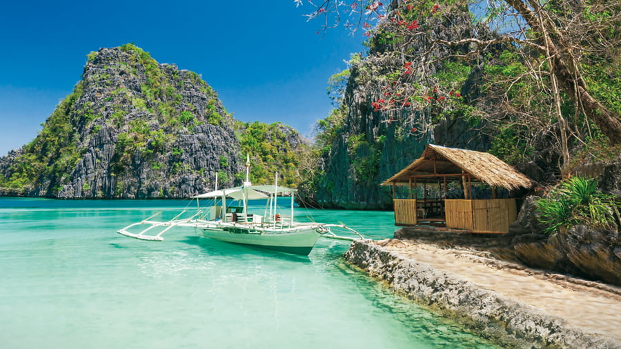

World Paradise
Boracay filipinas
Borácay es una isla tropical ubicada aproximadamente a unos 315 km al sur de Manila y a 2 km del extremo noroccidental de la isla de Panay, en la región filipina de las Bisayas Occidentales. Es uno de los destinos turísticos más populares del país. La isla se divide en los barangayes de Manoc-Manoc, Balabag y Yapak (3 de los 17 barangays que componen la municipalidad de Malay), y se encuentra bajo el control administrativo del Philippine Tourism Authority en coordinación con el gobierno provincial de Aclán. Borácay cuenta con unos 20 000 habitantes. Su popularidad se debe a la transparencia de sus aguas y la finísima arena de su playa principal, considerada como una de las mejores del mundo. La playa de Cagban, orientada al sur, se ubica justo en un pequeño estrecho frente al muelle de Caticlán en la isla de Panay. Junto a ella, el muelle de Cagban sirve como el punto principal de entrada y salida a Borácay durante la mayor parte del año. Cuando los vientos y la mar así lo aconsejan, la playa de Tambisaan, en el costado oriental de la isla, actúa como acceso alternativo. Las dos principales playas turísticas, White Beach y la playa de Bulabog, están situadas en los costados opuestos de la estrecha franja central de la isla. White Beach está encarada al oeste mientras que la playa de Bulabog mira hacia el este. La isla tiene varias playas más. White Beach es la playa turística por excelencia. Recorrida por vendedores de souvenirs y masajistas ambulantes, a lo largo de sus más de 4 km de longitud se alinean complejos turísticos, restaurantes, bares y cibercafés. En la porción central de la playa, un camino de arena de unos dos kilómetros denominado Beachfront Path discurre a lo largo de ésta, separándola de los propios establecimientos turísticos. En los extremos norte y sur de White Beach, los establecimientos se alinean directamente frente a la propia playa. En años pasados, la entrada y salida a Borácay se realizaba desde pequeños embarcaderos ubicados a lo largo de Beachfront Path, pero desde el 2007 se utilizan únicamente los dos muelles anteriormente mencionados, dependiendo del clima. Beachfront Path está conectado mediante varias carreteras y caminos a la carretera principal de la isla, Main Road, que se extiende a lo largo de esta. En el extremo norte de White Beach, un sendero bordea el cabo conectando White Beach con la playa de Diniwid. En la costa opuesta a White Beach, la playa de Bulabog representa el segundo centro turístico y la principal zona para la práctica del windsurf y el kitesurf.